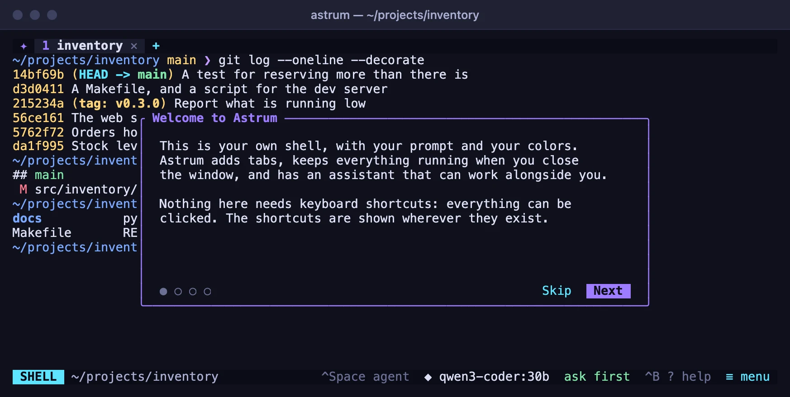
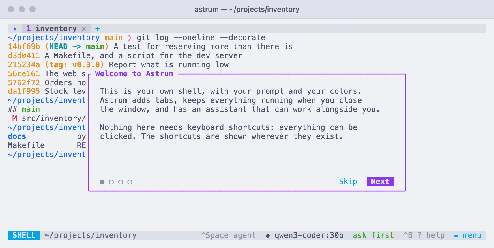

Getting started
Your first minutes with Astrum: what is on the screen, a new tab, a split, a question for the agent, and coming back.
Starting Astrum
If Astrum is not installed yet, see Install. Then, in the terminal app you already use:
astrumYou are in your own shell, with your own prompt and colors, plus a bar along the top and one along the bottom. The first tab starts in the directory you ran astrum from. Until you choose a theme, Astrum draws everything in your terminal's own colors, so nothing about how your terminal looks changes.
Everything in Astrum can be done with the mouse. The keys are there for people who want them, and the menus show them beside each entry.
The walkthrough
The first time you start Astrum, it shows a short walkthrough of four cards: what Astrum is, tabs and panes, the agent, and coming back.
| Do this | With the mouse | With the keyboard |
|---|---|---|
| Next card | click Next | → or Enter |
| Card before | click Back | ← |
| Put it away | click Skip (or Done on the last card) | Esc |
If you have not chosen a model yet, the card about the agent has a Choose a model button: it closes the walkthrough and opens the list of models your providers offer.
The walkthrough is shown once. To see it again, click ≡ menu → Settings → Show the walkthrough.


What is on the screen
The tab bar
Along the top is one entry for each tab: its number, its name, and a ✕ that closes it. After the last tab, + opens a new one. If you are in a named session, its name is at the right-hand end.
A tab names itself after what it is doing: the program running in it, or else the directory its shell is in. A small mark before the name tells you about a tab you are not looking at, such as an agent at work or a command that has finished. Tabs and panes lists them.
The status bar
Along the bottom, from left to right:
- The
SHELLchip says your typing goes to the shell. Click it and it turns into✦ AGENT: your typing now goes to the agent. Click it again to go back. - The directory the shell is in.
- Offers that fit the moment:
explainandfixafter a command fails,watchwhile a command of yours is running,take the agent inwhilesshorsudo -shas the pane. - The model the agent uses,
◆ choose modeluntil you have picked one. Click it for the list. - How much the agent may do by itself. It starts at
ask first; click to step through the levels. ? help, a screen with every key.≡ menu, everything Astrum does, each entry with the key that does the same.
Every tab, chip and button on the two bars can be clicked. Keys are shown the way terminals write them: ^B means Ctrl+B.
Your first tab
Click + in the tab bar. A new tab opens, in the same directory as the one you were in. Click a tab to go to it, or turn the mouse wheel over the tab bar to step through them. Drag a tab along the bar to move it, and click its ✕ to close it.
The keys: Ctrl+B c for a new tab, Ctrl+B n and Ctrl+B p for the next and previous one, Ctrl+B and a number to go straight to that tab.
To give a tab a name of your own, right-click it and choose Rename.
Your first split
Right-click anywhere in the shell and choose Split right. The pane is divided in two, with a new shell on the right, in the same directory. Split down puts the new one below instead.
- Click a pane to type in it.
- Drag the line between two panes to give one more room.
- Right-click a pane and choose Zoom to let it fill the tab for a while; Unzoom brings the others back.
- Right-click and choose Close pane when you are done with it, or type
exitin its shell.
The keys: Ctrl+B | splits side by side, Ctrl+B - one above the other, and Ctrl+B with an arrow key moves between panes. Tabs and panes has the rest.
Asking the agent something
Click the SHELL chip, or press Ctrl+Space. The agent panel opens, below the shell, or beside it on a terminal at least 140 columns wide.
The first time, the agent needs a model. Click ◆ choose model on the status bar (or type /model in the panel) and pick one from the list. Ollama running on this machine is found by itself; the hosted providers need an API key. Providers says how to set each one up.
Then type a question and press Enter:
what is using the most disk space in this directory?The agent reads what is on your screen and works in your own shell. Before it runs a command, it shows it to you and asks: click Yes, Yes, don't ask again this session, Edit first, or No, do something else. The command then runs in the pane, where you can watch it and take over. Esc stops the agent.
You do not have to switch to the panel to ask. At the shell prompt, start a line with # and a space:
# why did that last command failThe line goes to the agent instead of the shell, and the keyboard stays where it is. The agent covers everything it can do.
Leaving and coming back
Close the terminal window whenever you like. Your shells keep running, and so does whatever is running in them. To leave without closing the window, click ≡ menu → Detach (keep everything running), or press Ctrl+B d. Astrum says the session keeps running and how to return.
Later, in any terminal window:
astrumEvery tab, split, running program and line of scrollback is where you left it. After a restart of the machine, the tabs, their splits, their directories and what they showed come back too, each pane with a fresh shell. Sessions that come back explains what is kept and for how long.
Where to go next
- Tabs and panes: splits, scrollback, finding text, copying, links and pictures.
- The mouse and the keys: every click, every menu, every key, and how to change them.
- Sessions that come back: named sessions, stopping one, and what returns after a reboot.
- Tabs on other machines: a tab on a server over your own
ssh, whose shells stay there. - The agent: what it can do, and how much it may do on its own.
- Settings: the settings screen and the config file.